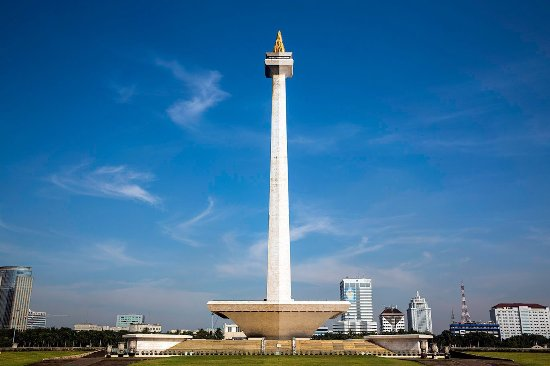
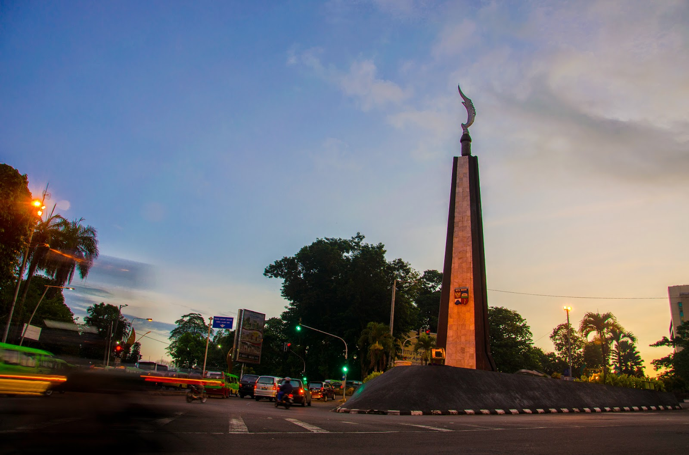

Auliani Photography
Tentang Kami
Fotografi (dari bahasa Inggris: photography, yang berasal dari kata Yunani yaitu "photos": cahaya dan "grafo": melukis/menulis) adalah proses melukis/menulis dengan menggunakan media cahaya. Sebagai istilah umum, fotografi berarti proses atau metode untuk menghasilkan gambar atau foto dari suatu objek dengan merekam pantulan cahaya yang mengenai objek tersebut pada media yang peka cahaya. Alat paling populer untuk menangkap cahaya ini adalah kamera. Tanpa cahaya, tidak ada foto yang bisa dibuat.
Prinsip fotografi adalah memfokuskan cahaya dengan bantuan pembiasan sehingga mampu membakar medium penangkap cahaya. Medium yang telah dibakar dengan ukuran luminitas cahaya yang tepat akan menghasilkan bayangan identik dengan cahaya yang memasuki medium pembiasan (selanjutnya disebut lensa).
Untuk menghasilkan intensitas cahaya yang tepat untuk menghasilkan gambar, digunakan bantuan alat ukur berupa lightmeter. Setelah mendapat ukuran pencahayaan yang tepat, seorang fotografer bisa mengatur intensitas cahaya tersebut dengan mengubah kombinasi ISO/ASA (ISO Speed), diafragma (Aperture), dan kecepatan rana (speed). Kombinasi antara ISO, diafragma & speed disebut sebagai pajanan (exposure).
Paket Promo
| Paket A |
Paket B |
Paket C |
| Paket Murmer untuk Kamu |
Paket Standar untuk Kamu |
Paket Premium untuk Kamu |
Paket ini include :
- Durasi 3 Jam
- 1 Kamera
- 1 Video Cinematic
|
Paket ini include :
- Durasi 5 Jam
- 2 Kamera
- 2 Video Cinematic
|
Paket ini include :
- Durasi 7 Jam
- 3 Kamera
- 3 Cinematic Video
- Flashdisk 32GB
|
| Rp. 1.000.000,- |
Rp. 2.500.000,- |
Rp. 3.250.000,- |
| Syarat dan Ketentuan : Harga tidak termasuk akomodasi |
Cabang Kami
|
|

|

|
| Bandung |
Jakarta |
Bogor |
Galeri Kami